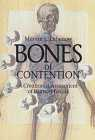

Review: Bones of Contention
The book Bones of Contention, by Marvin Lubenow (1992), is considered by many creationists to be the definitive creationist treatment of the claimed evidence for human evolution. To his credit, Lubenow has read a large amount of the scientific literature on human evolution, and his book stands up well compared to the gross incompetence of other creationist authors such as Duane Gish and Malcolm Bowden who have written on the same topic. By any other standards, the book fails badly and will not convince anyone familiar with the details of the literature on human evolution.The major theme of Bones of Contention is that the various species of hominid cannot form an evolutionary sequence because they overlap one another in time.
Firstly, he argues that a species cannot survive once it has given rise to a new species. Unlike many other creationists, he does at least attempt to give some justification for this. Supposedly, the newer, fitter descendant species, would, because of its superiority, drive its parent species to extinction. The argument is incorrect because members of the parent species may live in a separate region from the new species. If the species come into contact again, there may be no competition because they have diverged enough to occupy different ecological niches. (Many scientists would argue that even the requirement for a separate region is unnecessary.) Additionally, it is a misunderstanding of evolutionary theory to claim that a new species is "superior", in an absolute sense, to its parent species. Typically, both species will be "superior" at living in their own niches.
This argument is so broad that it would not only disprove human evolution but all evolution; Lubenow is basically asserting that a species cannot split into two species. Obviously this is not the view of speciation accepted by evolutionists, since it would follow that the number of living species could never increase. Nor, in fact, is it a view of speciation generally accepted by creationists, most of whom believe that many living species descended from the same biblical 'kind'. In fact, this argument is so weak that even Answers in Genesis has abandoned it; as they correctly point out, "... there's nothing in evolutionary theory that requires the main group to become extinct."
The argument is also contradicted by real world examples, such as that of the 13 species of finch which live on the Galapagos Islands. There is such compelling evidence that these are descended from a common ancestor that even most creationists accept them as evidence of evolution "within a created kind". If Lubenow was correct, even such micro-evolution would be impossible. By his argument, newly-evolved finch species should drive their ancestors to extinction. This does not happen, of course, because they all live on different foods.
Secondly, and more seriously, Lubenow claims that, in some cases, a descendant species existed before the species it supposedly descended from. Clearly, this is impossible under evolutionary theory.
For example, Lubenow claims that Homo erectus overlaps the entire time range in which Homo habilis is found. The oldest dated habilis specimen he lists is about 1.9 million years old (with a possibility that another was as much as 2.35 million years old).
Lubenow criticizes Klein (1989) for showing a graph in which habilis is shown preceding erectus in time, when none of the habilis fossils discussed by Klein are dated before 1.9 million years ago. In this case, Lubenow has not read Klein carefully enough. Klein does, on page 133, and in a graph on page 112, mention the presence of habilis-like fossils found at about 2.3 million years. These are a few fragmentary teeth attributed to Homo, found at Omo in Ethiopia, and dated to 2.3-2.4 million years (Howell et al. 1987). They are relatively unimportant, and it is not surprising that Klein would not give them any further discussion, but they do exist.
However, there is no reason to believe that fossils have been found over the entire range of time for which habilis existed. Almost all habilis fossils have been found in the rich deposits of Olduvai Gorge and Koobi Fora (both less than 2 million years old), while there is a scarcity of fossiliferous regions between 2 and 2.5 million years.
One might expect further fossil finds to extend the time range in which H. habilis is known, and that is what has likely happened. Hill et al.(1992) have analyzed a skull bone, KNM-BC 1, found in Kenya in 1967. They identified it as belong to the genus Homo (though not to erectus or sapiens), and have dated it at 2.4 million years. Schrenk et al.(1993) have announced the discovery in Malawi of a hominid lower jaw, UR 501, that they have attributed to Homo rudolfensis (a proposed habilis-like species). Faunal correlations suggest it is probably around 2.3 to 2.5 million years old. Kimbel et al.(1996) have reported an upper jaw found in Ethiopia which belongs to the genus Homo, is associated with stone tools, and is over 2.3 million years old. And Semaw et al.(1997) have reported stone tools found in Ethiopia and dated at between 2.5 and 2.6 million years old. Since stone tools are not known to have been used by australopithecines, it is most likely that they were made by early Homo. In short, there is growing evidence of early Homo species which could have been ancestral to H. erectus.
Similarly, Lubenow claims that humans are found up to 4.5 million years ago, before any australopithecines. Before 2 million years ago, the evidence for this consists of only two fossils, the Laetoli footprints and the Kanapoi Hominid (KP 271) (since dated at about 4 million years). This is Lubenow's strongest argument, because both fossils are, arguably, from humans. The problem is that there is not enough other evidence to exclude the possibility that both belong to australopithecines. More diagnostic fossils such as skulls, or partial skeletons, could prove the existence of humans, but so far, all such evidence points only to the existence of australopithecines past 3 million years ago.
However, Lubenow's argument for KP 271 has been greatly weakened by a very detailed multivariate analysis by Lague and Jungers (1996). This study, employing more fossils and more measurements than earlier ones, placed KP 271 outside the range of human variation, and showed it clustering strongly with other fossil hominids.
There are more fossils which Lubenow considers to be sapiens, but which are as old as the earliest erectus fossils (about 2 million years). These consist of some undoubted habilis fossils such as ER 1470, and some fossils usually assigned to erectus or habilis. These fossils are all of body parts which are difficult to classify, because other Homo species are both poorly known, and not that different below the neck, as far as we know, from modern humans. Lubenow admits the difficulty but assigns them to H. sapiens anyway.
Lubenow says that there "is no compelling reason" why ER 1470 cannot be classified as Homo sapiens based on its anatomy. This claim will have scientists' jaws dropping in astonishment. As I document in my page on Homo habilis, ER 1470 differs substantially from H. sapiens in many features.
Lubenow similarly claims that the leg bones ER 1481 (about 1.9 million years old) are "fully modern", but gives no documentation of this. Although ER 1481 is similar to modern humans and belonged to a bipedal creature, there are numerous features in which it differs from H. sapiens (McHenry and Corruccini 1976, Aiello and Dean 1990).
Similarly, Lubenow considers that many H. erectus fossils occur too early or too late. The "early" fossils are mostly obscure and difficult to identify or date, and Lubenow seems to have chosen dates for them that help his argument. For example, he identifies one of them, the hip bone ER 3228, as 2 million years old, even though he elsewhere quotes from a scientific paper which describes it as "roughly 1.5 m.y. (or greater)". Even if it is 2 million years old, habilis is so poorly known below the neck that it is difficult to identify isolated bones.
The "late" erectus fossils are a group of over 100 supposed H. erectus fossils occurring after 300,000 years ago. Many are Australian aboriginals, including over 40 from Kow Swamp, none of which are classified as Homo erectus by anyone except Lubenow.
Lubenow continually resorts to the argument that overlaps between species falsify human evolution. Once it is realized that this argument is based on a misunderstanding of evolutionary theory, Lubenow's book loses much of its force.
This page is part of the Fossil Hominids FAQ at the talk.origins Archive.
Home Page |
Species |
Fossils |
Creationism |
Reading |
References
Illustrations |
What's New |
Feedback |
Search |
Links |
Fiction
http://www.talkorigins.org/faqs/homs/a_lubenow.html, 04/25/2005
Copyright © Jim Foley
|| Email me